Random¶
The purpose of best.random is to define various probabilistic concepts that are useful in uncertainty quantification tasks as well as in solving inverse problems. The module is trying to make as much use as possible of scipy.stats. This module intends to be a generalization to random vectors of the concepts found there. Therefore, it suggested that you are familiar with scipy.stats before moving forward.
Conditional Random Variable¶
The class best.random.RandomVariableConditional defines a
1D random variable conditioned to live in a subinterval. Generally
speaking, let  be a random variable and 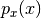 its
probability density. Now let,
be a random variable and 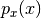 its
probability density. Now let,  be the truncation of
conditioned to live on the interval
be the truncation of
conditioned to live on the interval ![[a, b]](_images/math/da2e551d2ca2155b8d8f4935d2e9757722c9bab6.png) . Its probability
density is:
. Its probability
density is:
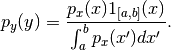
Here is the definition of this class:
- class best.random.RandomVariableConditional¶
A 1D random variable conditioned to live in a subinterval.
The class inherits scipy.stats.rv_continuous and overloads the functions _pdf and _cdf. The rest of the functionality is provided automatically by scipy.stats.rv_continuous.
- __init__(random_variable, subinterval[, name='Conditional Random Variable'])¶
Initialize the object.
Parameters: - random_variable (scipy.stats.rv_continuous or best.random.RandomVariableConditional) – A 1D random variable.
- subinterval (tuple, list or numpy array with two elements) – The subinterval .
- name (str) – A name for the random variable.
- pdf(y)¶
Get the probability density at y.
Parameters: y (float) – The evaluation point.
- cdf(y)¶
Get the cummulative distribution function at y.
This is:
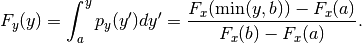
Parameters: y (float) – The evaluation point.
- rvs([size=1])¶
Take samples from the probability density.
Note : This is carried out by rejection sampling. Therefore, it can potentially be very slow if the interval is very overload it if you want something faster.
Todo : In future editions this could use some MCMC variant.
Parameters: - size (int or tuple/list of integers) – The shape of the samples you want to take.
- loc (float) – Shift the random variable by loc.
- scale (float) – Scale the random variable by scale.
Returns: The samples
- split([pt=None])¶
Split the random variable in two conditioned random variables.
Creates two random variables
 and 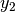 with
probability densities:
and 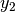 with
probability densities: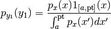
and
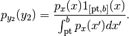
Parameters: pt (float or NoneType) – The splitting point. If None, then the median is used. Returns: A tuple of two best.random.RandomVariableConditional
| Note: | In addition to the few methods defined above, best.random.RandomVariableConditional has the full functionality of scipy.stats.rv_continuous . |
|---|
Now, let’s look at an example.
Let’s create a random variable with an Exponential probability
density:
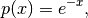
and construct the conditioned random variable by restricting
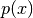 on  :
:
import scipy.stats
import best.random
px = scipy.stats.expon()
py = best.random.RandomVariableConditional(px, (1, 2), name='Conditioned Exponential')
print str(py)
print py.rvs(size=10)
print py.interval(0.5)
print py.median()
print py.mean()
print py.var()
print py.std()
print py.stats()
print py.moment(10)
which gives:
Conditioned Random Variable: Conditioned Exponential
Original interval: (1, 2)
Subinterval: (1, 2)
Prob of sub: 0.232544157935
[ 1.67915905 1.18775814 1.78365754 1.3167513 1.33650141 1.19931135
1.85734068 1.74867647 1.35161718 1.55198301]
(1.1720110607571301, 1.6426259804912111)
1.37988549304
1.41802329313
0.0793264057922
0.281649437763
(array(1.4180232931306735), array(0.0793264057922074))
129.491205116
Here is, how you can visualize the pdf and the cdf:
import numpy as np
import matplotlib.pyplot as plt
y = np.linspace(0, 4, 100)
plt.plot(y, py.pdf(y), y, py.cdf(y), linewidth=2.)
plt.legend(['PDF', 'CDF'])
plt.show()
which gives you the following figure:
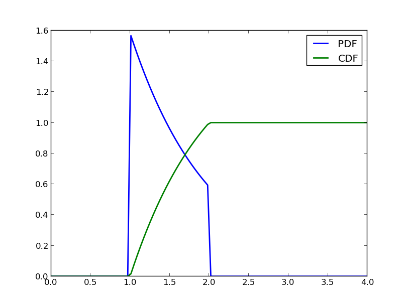PDF and CDF of a conditioned Exponential random variable.
Now, let’s split it in half and visualize the two other random variables:
py1, py2 = py.split()
print str(py1)
print str(py2)
which prints:
Conditioned Random Variable: Conditioned Random Variable
Original interval: (0.0, inf)
Subinterval: [ 1. 1.38629436]
Prob of sub: 0.117879441171
Conditioned Random Variable: Conditioned Random Variable
Original interval: (0.0, inf)
Subinterval: [ 1.38629436 2. ]
Prob of sub: 0.114664716763
and also creates the following figure:
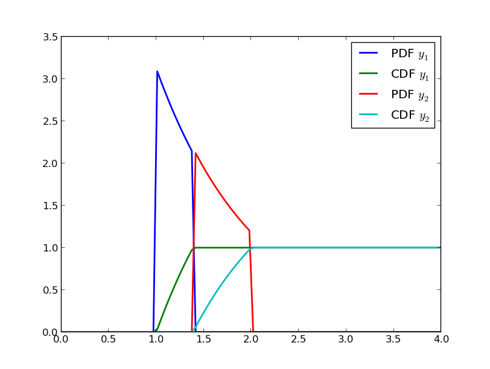PDF and CDF of the two random variables that occure after splitting in two the conditioned Exponential random variable of this example.
Random Vector¶
The class best.random.RandomVector represents a random vector. The purpose of this class is to serve as a generalization of scipy.stats.rv_continuous. It should be inherited by all classes that wish to be random vectors.
Here is a basic reference for the class:
- class best.random.RandomVector¶
- __init__(support[, num_input=None[, hyp=None[, name='Random Vector']]])¶
Initialize the object.
The class inherits from best.maps.Function. The motivation for this choice is that the mathematical definition of a random variable which states that it is a measurable function. Now, the inputs of a best.random.RandomVector can be thought thought as an other random vector given which this random vector has a given value. This becomes useful in classes that inherit from this one, e.g. best.random.KarhuneLoeveExpansion.
The support is an object representing the support of the random vector. It has to be a best.domain.Domain or a rectangle represented by lists, tuples or numpy arrays.
Parameters: - support (best.domain.Domain or a rectangle) – The support of the random variable.
- num_input (int) – The number of inputs. If None, then it is set equal to support.num_dim.
- num_hyp (int) – The number of hyper-paramers (zero by default).
- hyp (1D numpy array or None) – The hyper-parameters.
- name (str) – A name for the random vector.
- support¶
Get the support of the random vector.
- num_dim¶
Get the number of dimensions of the random vector.
- name¶
Get the name of the random vector.
- _pdf(x)¶
This should return the probability density at x assuming that x is inside the domain. It must be implemented by all deriving classes.
Parameters: x (1D numpy array of dimension num_dim) – The evaluation point.
- pdf(x)¶
Get the probability density at x. It uses besr.random.RandomVector._pdf().
Parameters: x (1D numpy array of dimension num_dim or a 2D numpy array of dimenson N x num_dim) – The evaluation point(s).
- _rvs()¶
Get a sample of the random variable. It must be implemented by all deriving classes.
Returns: A sample of the random variable. Return type: 1D numpy array if dimension num_dim
- rvs([size=1])¶
Get many samples from the random variable.
Parameters: size (list or tuple of ints) – The shape of the samples you wish to draw. Returns: Many samples of the random variable. Return type: numpy array of dimension size + (num_dim, )
- moment(n)¶
Get the n-th non-centered moment of the random variable. This must be implemented by deriving methods.
Parameters: n (int) – The order of the moment. Returns: The n-th non-centered moment of the random variable.
- mean()¶
Get the mean of the random variable.
- var()¶
Get the variance of the random variable.
- std()¶
Get the standard deviation of the random variable.
- stats()¶
Get the mean, variance, skewness and kurtosis of the random variable.
- expect([func=None[, args=()]])¶
Get the expectation of a function with respect to the probability density of the random variable. This must be implemented by the deriving classes.
Random Vector of Independent Variables¶
The class best.random.RandomVectorIndependent represents a random vector of independent random variables. It inherits the functionality of best.random.RandomVector. Here is the reference for this class:
- class best.random.RandomVectorIndependent¶
A class representing a random vector with independent components.
- __init__(components[, name='Independent Random Vector')¶
Initialize the object given a container of 1D random variables.
Parameters: - components (tuple or list of scipy.stats.rv_continuous) – A container of 1D random variables.
- name (str) – A name for the randomv vector.
- component¶
Return the container of the 1D random variables.
- __getitem__(i)¶
Allows the usage of [] operator in order to get access to the underlying 1D random variables.
- _pdf(x)¶
Evaluate the probability density at x. This is an overloaded version of best.random.RandomVector._pdf().
- _rvs()¶
Take a random sample. This is an overloaded version of best.random.RandomVector._rvs().
- moment(n)¶
Return the n-th non-centered moment. This is an overloaded version of best.random.RandomVector.moment().
- split(dim[, pt=None])¶
Split the random vector in two, perpendicular to dimension dim at point pt.
Parameters: - dim (int) – The splitting dimension.
- pt (float) – The splitting point. If None, then the median of dimension dim is used.
Returns: A tuple of two random vectors.
Return type: tuple of best.random.RandomVectorIndependent.
Here are some examples of how you may use this class:
comp = (stats.expon(), stats.beta(0.4, 0.8), stats.norm())
rv = best.random.RandomVectorIndependent(comp)
print str(rv)
x = rv.rvs()
print 'One sample: ', x
print 'pdf:', rv.pdf(x)
x = rv.rvs(size=10)
print '10 samples: ', x
print 'pdf: ', rv.pdf(x)
This prints:
Random Vector: Independent Random Vector
Domain: Rectangular Domain < R^3
Rectangle: [[ 0. inf]
[ 0. 1.]
[-inf inf]]
pdf of domain: 1.0
One sample: [ 0.27583967 0.62299007 1.01218697]
pdf: 0.104129553451
10 samples: [[ 2.48588069e+00 5.13373494e-01 2.51959945e+00]
[ 7.18463201e-01 8.03626538e-01 -1.30967423e-01]
[ 3.81458502e-01 1.22199215e-01 -5.47956262e-02]
[ 4.80799826e-01 3.75637813e-02 1.10318554e-02]
[ 4.52448778e-01 2.91548860e-05 8.79078586e-01]
[ 3.03627476e+00 2.35715855e-02 -1.18775141e+00]
[ 3.49253408e-01 8.90061454e-01 -8.93935818e-01]
[ 2.29852363e-02 4.55557385e-04 1.13318738e+00]
[ 2.69130645e-01 2.88083586e-02 7.97967613e-01]
[ 4.18872218e-01 9.97623679e-01 -2.24285728e+00]]
pdf: [ 1.30325502e-01 2.68022713e-02 1.62999252e-01 3.26470531e-03
9.98952583e-02 7.43932369e+00 3.29566324e-02 1.62779856e-01
1.26561530e-01 1.25984246e-03]
Here are some statistics:
print rv.mean()
print rv.var()
print rv.std()
print rv.stats()
This prints:
[ 1. 0.33333333 0. ]
[ 1. 0.1010101 1. ]
[ 1. 0.31782086 1. ]
(array([ 1. , 0.33333333, 0. ]), array([ 1. , 0.1010101, 1. ]), array([ 2. , 0.65550553, 0. ]), array([ 23. , 11.6225, 2. ]))
Let us split the random vector perpendicular to the first dimension:
rv1, rv2 = rv.split(0)
print str(rv1)
x = rv1.rvs(size=5)
print x
print rv1.pdf(x)
print rv2.pdf(x)
print str(rv2)
print x
x = rv2.rvs(size=5)
print rv2.pdf(x)
This prints:
Random Vector: Independent Random Vector
Domain: Rectangular Domain < R^3
Rectangle: [[ 0. 0.69314718]
[ 0. 1. ]
[ -inf inf]]
pdf of domain: 0.5
[[ 5.19548316e-01 7.68241112e-01 3.91270986e-01]
[ 1.39697221e-01 1.45666923e-02 -4.77341007e-01]
[ 3.81103879e-01 3.77165970e-01 -2.79344311e-01]
[ 3.89403608e-01 3.05662039e-02 9.24004739e-01]
[ 4.48582217e-01 1.74794018e-04 1.16001176e+00]]
[ 0.2452701 2.79216704 0.36777408 1.02298609 16.60788446]
[ 0. 0. 0. 0. 0.]
Random Vector: Independent Random Vector
Domain: Rectangular Domain < R^3
Rectangle: [[ 0.69314718 inf]
[ 0. 1. ]
[ -inf inf]]
pdf of domain: 0.5
[[ 5.19548316e-01 7.68241112e-01 3.91270986e-01]
[ 1.39697221e-01 1.45666923e-02 -4.77341007e-01]
[ 3.81103879e-01 3.77165970e-01 -2.79344311e-01]
[ 3.89403608e-01 3.05662039e-02 9.24004739e-01]
[ 4.48582217e-01 1.74794018e-04 1.16001176e+00]]
[ 2.47788783 0.073047 4.95662696 0.16646329 0.09860328]
Karhunen-Loeve Expansion¶
Karhunen-Loeve Expansion (KLE) is a way to represent random fields with a discrete set of random variables. It can be thought of as a discrete representation of a random field, or a low dimensional representation of a high-dimensional random vector. It is implemented via the class best.random.KarhunenLoeveExpansion.
- class best.random.KarhuneLoeveExpansion¶
Inherits : best.random.RandomVector Define a Discrete Karhunen-Loeve Expansion. It can also be thought of a as a random vector.
- PHI¶
Get the set of eigenvectors of the covariance matrix.
- lam¶
Get the set of eigenvalues of the covariance matrix.
- sigma¶
Get the signal strength of the model.
- __init__(PHI, lam[, mean=None[, sigma=None[, name='Karhunen-Loeve Expansion']]])¶
Initialize the object.
Parameters: - PHI (2D numpy array) – The eigenvector matrix.
- lam (1D numpy array) – The eigen velues.
- mean (1D numpy array) – The mean of the model.
Precondition : PHI.shape[1] == lam.shape[1].
- _eval(theta, hyp)¶
Evaluate the expansion at theta.
Note : Do not use this directly. Use best.random.KarhunenLoeveExpansion.__call__() which is directly inherited from best.maps.Function.
Parameters: - theta (1D array) – The weights of the expansion.
- hyp – Ignored.
Overloads : best.maps.Function._eval()
- project(y)¶
Project y to the space of the KLE weights. It is essentially the inverse of best.random.KarhunenLoeveExpansion.__call__().
Parameters: y (1D numpy array) – A sample from the output. Returns: The weights corresponding to y. Return type: 1D numpy array
- _rvs(self)¶
Return a sample of the random vector.
Note : Do not use this directly. Use best.random.KarhuneLoeveExpansion.rvs() which is directly inherited from best.random.RandomVector. Returns: A sample of the random vector. Return type: 1D numpy array Overloads : best.random.RandomVector._rvs()
- _pdf(self, y)¶
Evaluate the pdf of the random vector at y.
Note : Do not use this directly. Use best.random.KarhuneLoeveExpansion.pdf() which is directly inherited from best.random.RandomVector. Returns: The pdf at y. Return type: float Overloads : best.random.RandomVector._pdf()
- create_from_covariance_matrix(A[, mean=None[ energy=0.95[, k_max=None]]])¶
Create a best.random.KarhuneLoeveExpansion object from a covariance matrix A.
This is a static method.
Parameters: - A (2D numpy array) – The covariance matrix
- mean (1D numpy array or None) – The mean of the model. If None then all zeros.
- energy (float) – The energy of the field you wish to retain.
- k_max (int) – The maximum number of eigenvalues to be computed. If None, then we compute all of them.
Returns: A KLE based on A.
Return type: best.random.KarhunenLoeveExpansion.
Let’s now look at a simple 1D example:
import numpy as np
import matplolib.pyplot as plt
from best.maps import CovarianceFunctionSE
from best.random import KarhunenLoeveExpansion
# Construct a 1D covariance function
k = CovarianceFunctionSE(1)
# We are going to discretize the field at:
x = np.linspace(0, 1, 50)
# The covariance matrix is:
A = k(x, x, hyp=0.1)
kle = KarhunenLoeveExpansion.create_from_covariance_matrix(A)
# Let's plot 10 samples
plt.plot(x, kle.rvs(size=10).T)
plt.show()
You should see something like the following figure:
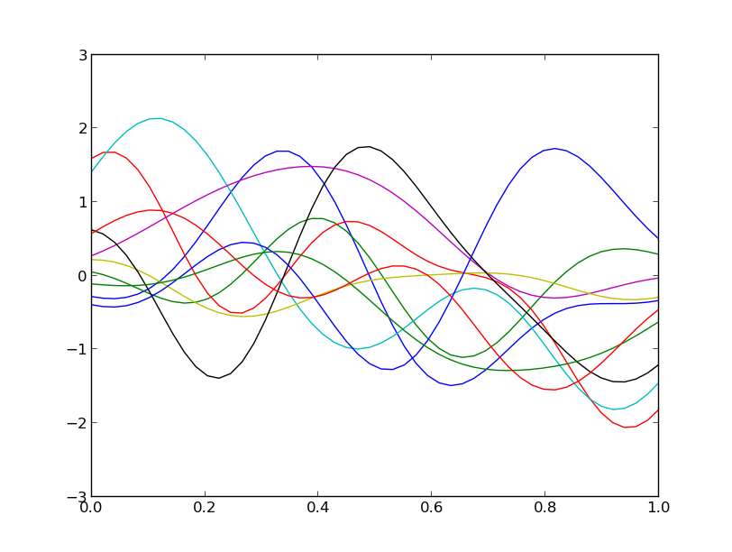Samples from a 1D Gaussian random field with zero mean and a Squared Exponential Covariance using the Karhunen-Loeve Expansion.
Likelihood Functions¶
Many algorithms require the concept of a likelihood function. This is provided via:
- class best.random.LikelihoodFunction¶
Inherits : best.maps.Function The base class of all likelihood functions.
A likelihood function is a actually a function of the hyper-parameters (or simply the parameters) of the model and the data. In Bayesian statistics, it basicaly models:
(1)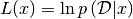
 is the data and it should be set either
at the constructor or with:
is the data and it should be set either
at the constructor or with:likelihood.data = data
The log of the likelihood at
for a given
(see (1)) is evaluated by:likelihood.__call__(x),
which is a function that should be implemented by the user.
- __init__(num_input[, data=None[, name='Likelihood Function'[, log_l_wrapped=None]]])¶
Initialize the object.
Parameters: - num_input (int) – The number of inputs (i.e., the number of parameters of the likelihood function).
- data – The observed data.
- name – A name for the distribution.
- log_l_wrapped – A normal function that implements, the likelihood.
- data¶
Set/Get the data. The data can be any object.
A more specific likelihood class that accepts only real data is the following:
- class best.random.LikelihoodFunctionWithGivenMean¶
Inherits : best.random.LikelihoodFunction This class implements a likelihood function, that requires the evaluation of another function within it (.e.g. that of a forward solver.). It is not to be used by its own, but rather as a base class for more specific likelihood functions.
Here, we assume that the data are actually a num_data vector and that the mean of the likelihood is given by a function (mean_function) with num_input variables to num_data variables.
- __init__([num_input=None[, data=None[, mean_function=None[, name='Likelihood Function with given mean']]]])¶
Initializes the object.
Warning
Either num_input or mean_function must be specified. If mean_function is a simple function, then the data are required so that we can figure out its output dimension.
Parameters: - num_input – Number of input dimensions. Ignored, if mean_function is a Function class.
- data – The observed data. A numpy vector. It must be specified if mean_function is a normal function.
- mean_function – A Function or a normal function. If, it is a Function, then mean_function.num_output must be equal to data.shape[0]. If it is a normal function, then it is assumed that it returns a data.shape[0]-dimensional vector.
- name – A name for the likelihood function.
- _to_string(pad):
Overloads : best.maps.Function._to_string()
- data¶
Overloads : best.random.LikelihoodFunction.data
- num_data¶
Get the number of dimensions of the data.
- mean_function¶
Set/Get the mean function.
Gaussian Likelihood Function¶
Here is a class that implements a Gaussian likelihood function:
- class best.random.GaussianLikelihoodFunction¶
Inherits : best.random.LikelihoodFunctionWithGivenMean This class represents a Gaussian likelihood function:
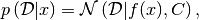
where
 is the covariance matrix and
is the covariance matrix and  a mean function.
a mean function.- __init__([num_input=None[, data=None[, mean_function=None[, cov=None[, name='Gaussian Likelihood Function']]]]])¶
Initialize the object.
param num_input: The number of inputs. Optional, if mean_function is a proper best.maps.Function. param data: The observed data. A vector. Optional, if mean_function is a proper best.maps.Function. It can be set later. param mean_function: The mean function. See the super class for the description. param cov: The covariance matrix. It can either be a positive definite matrix, or a number. param name: A name for the likelihood function. precondition: You must provide eithe the data or a proper mean_function.
- __call__(x)¶
Overloads : best.maps.Function.__call__()
- cov¶
Set/Get the covariance matrix.
Student-t Likelihood Function¶
Here is a class that implements a Student-t likelihood function:
- class best.random.StudentTLikelihoodFunction¶
Inherits : best.random.Gaussian This class represents a Student-t likelihood function.
- __init__(nu[, num_input=None[, data=None[, mean_function=None[, cov=None[, name='Gaussian Likelihood Function']]]]])¶
Initialize the object.
param nu: The degrees of freedom of the distribution. param num_input: The number of inputs. Optional, if mean_function is a proper best.maps.Function. param data: The observed data. A vector. Optional, if mean_function is a proper best.maps.Function. It can be set later. param mean_function: The mean function. See the super class for the description. param cov: The covariance matrix. It can either be a positive definite matrix, or a number. param name: A name for the likelihood function. precondition: You must provide eithe the data or a proper mean_function.
- __call__(x)¶
Overloads : best.random.GaussianLikelihoodFunction.__call__()
Distributions¶
A distribution is a concept that combines a likehood function with a random variable. Most probably we will replace it in the future with the best.random.RandomVector class that combines all these concepts.
- class best.random.Distributions¶
Inherits : best.random.LikelihoodFunction The base class of all distributions.
- __init__(num_input[, name='Distribution')¶
Initialize the object.
Parameters: - num_input (int) – The number of input dimensions.
- name (str) – A name for the distribution.
- sample([x=None])¶
Sample the distribution.
Parameters: x – If it is specified then x should be overriden. If it is not specified, then the sample is allocated and returned.
Many distributions together can be represented by:
- class best.random.JointDistribution¶
Inherits : best.random.Distribution A class that represents a collection of random variables.
- __init__(dist[, name='Joint Distribution'])¶
Initialize the object.
Parameters: dist (best.random.Distribution) – A list of distributions to be joined.
- __call__(x)¶
Overloads : best.maps.Function.__call__()
- sample([x=None])¶
Overloads : best.random.Distribution.sample()
- dist¶
Get the underlying distributions
A conditional distribution can be represented by:
- class best.random.ConditionalDistribution¶
Inherits : best.random.Distribution The base class for conditional distributions.
- __init__(num_input, num_cond[, name='Conditional Distribution')¶
Initialize the object.
Parameters: - num_input – The number of inputs.
- num_cond – The number of conditioning variables.
- __call__(z, x)¶
Redefines : best.maps.Fucntion.__call__() Evaluate the log of the probability at z given x.
Throws : NotImplementedError
- sample(x[, z=None])¶
Redefines : best.random.Distribution.sample() Sample z given x.
Throws : NotImplementedError
- num_cond¶
Get the number of conditioning variables.
The following class represents the product of a distribution with a conditional distribution:
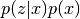
Here it is:
- class best.random.ProductDistribution¶
Inherits : best.random.Distribution It corresponds to the product
 .
corresponds to px and
.
corresponds to px and  to pzcx.
The input is assumed to be the vector [x, z].
to pzcx.
The input is assumed to be the vector [x, z].- __init__(pzcx, px[, name='Product Distribution'])¶
Initialize the object.
Parameters: - pzcx (best.random.ConditionalDistribution) – The distribution 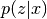.
- px (best.random.Distribution) – The distribution .
- __call__(x)¶
Overloads : best.maps.Function.__call__()
- sample()¶
Overloads : best.maps.Distributions.sample()
- px¶
Get the distribution corresponding to .
- pzcx¶
Get the distribution corresponding to
Sampling Distributions¶
We provide several distributions that you can use right away to construct new ones.
Uniform Distribution¶
- class best.random.UniformDistribution¶
Inherits : best.random.Distribution The uniform distribution on a square domain.
- __init__(num_input[, domain=None[, name='Uniform Distribution']])¶
Initialize the object.
Parameters: - num_input – The number of dimensions.
- domain – The domain of the random variables. Must be a (k x 2) matrix. If not specified, then a unit hyper-cube is used.
- name – A name for this distribution.
- __call__(x)¶
Overloads : best.maps.Function.__call__() Evaluates the logarithm of:
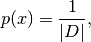
where 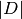 is the measure of the domain.
- sample([x=None])¶
Overloads : best.random.Distribution.sample()
- domain¶
Get/Set the domain.
Normal Distribution¶
- class best.random.NormalDistribution¶
Inherits : best.random.Distribution - __init__(num_input[, mu=None[, cov=None[, name='Normal Distribution')¶
Initialize the object.
Parameters: - num_input – The dimension of the random variables.
- mu – The mean. Zero if not specified.
- cov – The covariance matrix. Unit matrix if not specified.
- name – A name for the distribution.
- __call__(x)¶
Overloads : best.maps.Function.__call__()
- sample([x=None])¶
Overloads : best.random.Distribution.sample()
Student-t Distribution¶
- class best.random.StudentTDistribution¶
Inherits : best.random.NormalDistribution - __init__(num_input, nu[, mu=None[, cov=None[, name='Normal Distribution')¶
Initialize the object.
Parameters: - num_input – The dimension of the random variables.
- nu – The degrees of freedom.
- mu – The mean. Zero if not specified.
- cov – The covariance matrix. Unit matrix if not specified.
- name – A name for the distribution.
Mixture of Distributions¶
Here is a class that represents a mixture of distributions:
- class best.random.MixtureOfDistributions¶
Inherits : best.random.Distribution A class representing a mixture of distributions:
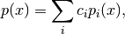
where 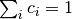 and 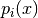 are distributions.
- __init__(weights, components[, name='Mixture of Distributions')¶
Initialize the object.
Parameters: - weights – The weight of each component.
- components (best.random.Distribution) – A list of the components.
- __call__(x)¶
Overloads : best.maps.Function.__call__()
- sample([x=None])¶
Overloads : best.random.Distribution.sample()
- weights¶
Get the weights of each component.
- components¶
Get the components (distributions).
- num_components¶
Get the number of components.
Posterior Distribution¶
A class representing a posterior distribution. It requires a likelihood function and a prior. This is design to be used with Sequential Monte Carlo. This is why it is a little bit strange. Most probably, you won’t have to overload it (or even understand how it works) unless you are doing something very special.
- class best.random.PosteriorDistribution¶
Inherits : best.random.LikelihoodFunction A class representing a posterior distribution.
The likelihood function: The class requires a likelihood object which can be any class implementing:
- likelihood.__call__(x): Giving the log likelihood at a particular x. Notice that x here is the parameter of the likelihood not the data. It is the responsibility of the user to make sure that the likelihood function, correctly captures the dependence on the data.
The prior distribution: The prior distribution is any object which implements:
- prior.__call__(x): Giving the log of the prior.
Overall, this class represents the following function:
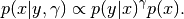
Again, I mention that specifying
is the responsibility of the user.
It is not directly needed in this class. All we use is
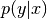 as a
function only, being fixed and implied.
The parameter gamma plays the role of a regularizing parameter.
The default value is 1. We have explicitely included it, because the main
purpose of this class is to be used within the Sequential Monte Carlo
framework.- __init__([likelihood=None[, prior=None[, gamma=1[, name='Posterior Distribution']]]])¶
Initialize the object.
Parameters: - likelihood – The likelihood function.
- prior – The prior distribution.
- gamma (float) – The regularizing parameter.
- name – A name for the distribution.
- __call__(x[, report_all=False])¶
Overloads : best.maps.Function.__call__() Evaluate the log of the posterior at x.
Parameters: - x – The point of evalutation.
- report_all – If set to True, then it returns a dictionary of all the values used to compose the log of the posterior (see below for details). Otherwise, it simply returns the log of the posterior.
- The function returns a dictionary r that contains:
- r['log_p']: The log of the pdf at x.
- r['log_like']: The log of the likelihood at x.
- r['log_prior']: The log of the prior at x.
- r['gamma']: The current gamma.
- _to_string(pad)¶
Overloads : best.maps.Function._to_string()
- likelihood¶
Get/Set the likelihood function.
- prior¶
Get/Set the prior.
- gamma¶
Get/Set gamma
Markov Chain Monte Carlo¶
We start by listing all the classes that take part in the formulation of the MCMC sampling algorithm. The purpose here, is to highlight the inheritance structure. We will give an example at the end that puts everything together.
The base class of any Markov Chain should be a:
- class best.random.MarkovChain¶
Inherits : best.Object The base class for a Markov Chain. Any Markov Chain should inherit it.
- __init__([name='Markov Chain'])¶
Initialize the object.
- __call__(x_p, x_n)¶
Evaluate the logarithm of the pdf of the chain.
Usually this would be written as:
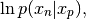
but we are using the programming convention that whatever is given comes first.
Parameters: - x_p – The state on which we are conditioning.
- x_n – The new state.
Trhows : NotImplementedError
- sample(x_p, x_n)¶
Sample from the Markov Chain and write the result on x_n.
Parameters: - x_p – The state on which we are conditioning.
- x_n – The new state. To be overwritten.
Throws : NotImplementedError
Proposal Distributions¶
MCMC requires a proposal distribution which is, of course, a Markov Chain:
- class best.random.ProposalDistribution¶
Inherits : best.random.MarkovChain The base class for the proposals used in MCMC.
- __init__([dt=1e-3[, name='Proposal Distribution']])¶
Initialize the object.
Parameters: dt (float) – The step size of the proposal. We put this here because many commonly met proposals do have a step size.
- dt¶
Get/set the step size of the proposal.
Random Walk Proposal¶
A very common proposal distribution is the Random Walk proposal:
- class best.random.RandomWalkProposal¶
A random walk proposal distribution.
The chain is defined by:
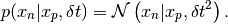
- __init__([dt=1e-3[, name='Random Walk Proposal']])¶
Initialize the object.
- __call__(x_p, x_n)¶
Overloads : best.random.MarkovChain.__call__()
- __sample__(x_p, x_n)¶
Overloads : best.random.MarkovChain.sample()
Langevin Proposal¶
The Langevin proposal is implemented via:
- class best.random.LangevinProposal¶
Inherits : best.random.Proposal A Langevin proposal that leads to a Metropolized-Adjusted Langevin Algorithm (MALA).
See the code for further details.
The MCMC class¶
Now we are in a position to discuss the implementation of the MCMC algorithm in best. It is achieved via the class best.random.MarkovChainMonteCarlo:
- class best.random.MarkovChainMonteCarlo¶
A general MCMC sampler.
The state of MCMC. We assume that the state x of MCMC is a class that implements the following methods:
- x.copy(): Create a copy of x and returns a reference to it.
The proposal of MCMC. The proposal of MCMC should implement the following methods:
- proposal.__call__(x_p, x_n): Evaluate the log of the pdf of
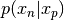 and return the result. For reasons of computational efficiency, we had to make the return value of this function a little bit more complicated than is necessary in MCMC. We assume that it returns an dictionary obj that has at least one field:
- obj['log_p']: The logarithm of the pdf at x.
This object corresponding to the current state is always stored. To understand, why something this awkward is essential, please see the code of the best.random.SequentialMonteCarlo class.
- proposal.sample(x_p, x_n): Sample and write the
result on x_n.
The target distribution. The target distribution should implement:
- target.__call__(x): Evaluate the log of the target pdf up
to a normalizing constant.
- __init__([target=None[, proposal=RandomWalkProposal()[,
- store_samples=False[, verbose=False[, output_frequency=1]]]]])
Initialize the object.
Parameters: - target – The target distribution.
- proposal – The proposal distribution.
- store_samples – If set to True, then all samples are stored (copied) and are accessible via self.samples.
- verbose – The verbosity flag. If set to True, then sth is printed at each MCMC step.
- output_frequency – If verbose is True, then this specifies how often something is printed.
- initialize(x[, eval_state=None])¶
Initialize the chain.
Initializes the chain at x. It is essential that the chain has been properly initialized!
- reinitialize()¶
Re-initialize the chain.
- perform_single_mcmc_step(self)¶
Performs a single MCMC step.
The current state of the chain is altered at the end (or not).
- sample([x=None[, eval_state=None[, return_eval_state=False[, steps=1]]]])¶
Sample the chain.
Parameters: - x – The initial state. If not specified, then we assume that it has already been set.
- steps – The number of MCMC steps to be performed.
- return_eval_state – Return the evaluated state at the end of the run.
Returns: A reference to the current state of the chain.
- copy()¶
Return a copy of this object.
- target¶
Set/Get the target distribution.
Every time the target changes, the chain must be initialized again. If the current state is already present, then this method automatically reinitializes the chain.
- proposal¶
Set/Get the proposal
- current_state¶
Get the current state of MCMC.
- proposed_state¶
Get the proposed state of MCMC.
- num_samples¶
Get the number of samples taken so far.
- num_accepted¶
Get the number of accepted samples so far.
- acceptance_rate¶
Get the acceptance rate.
- initialized¶
Check if the chain has been initialized.
- store_samples¶
Check if the samples are being stored.
- samples¶
Get the stored samples.
- verbose¶
Get/Set the verbosity flag.
- output_frequency¶
Get/Set the output_frequency.
Simple MCMC Example¶
Now that we have introduced best.random.MarkovChainMonteCarlo, let’s look at a very simple example that can be found in best/demo/test_mcmc.py:
if __name__ == '__main__':
import fix_path
import numpy as np
import math
from best.random import *
import matplotlib.pyplot as plt
class SampleTarget(LikelihoodFunction):
"""A sample target distribution."""
def __init__(self):
super(SampleTarget, self).__init__(1)
def __call__(self, x):
k = 3.
t = 2.
if x[0] < 0.:
return -1e99
else:
return (k - 1.) * math.log(x[0]) - x[0] / t
if __name__ == '__main__':
target = SampleTarget()
x_init = np.ones(1)
proposal = RandomWalkProposal(dt=5.)
mcmc = MarkovChainMonteCarlo(target=target, proposal=proposal,
store_samples=True,
verbose=True,
output_frequency=1000)
mcmc.initialize(x_init)
mcmc.sample(steps=100000)
samples = [mcmc.samples[i][0] for i in range(len(mcmc.samples))]
plt.hist(samples, 100)
plt.show()
This should plot the following figure:
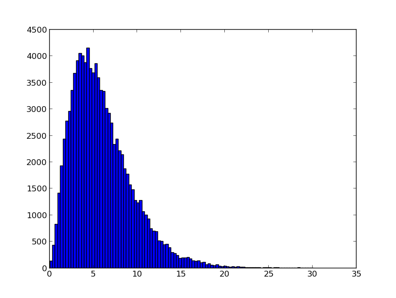The histogram of the samples gathered by MCMC.
Sequential Monte Carlo¶
Sequential Monte Carlo (SMC) is a way to sample multi-modal probability distributions by constructing a sequence of distributions that converge to the target distribution in a smooth manner and propagating through them an ensemble of particles.
In best SMC is implemented via the best.random.SequentialMonteCarlo which:
- Can work with arbitrary underlying MCMC samplers.
- Can automatically detect an optimal sequence of distributions.
- Can be run in parallel.
The mathematical details can be found in our paper on inverse problems which is currently under review.
- class best.random.SequentialMonteCarlo¶
For the moment do the following to get the complete documentation:
>> from best.random import SequentialMonteCarlo >> help(SequentialMonteCarlo)
I will add the complete documentation in short time.
Simple Sequential Monte Carlo Example¶
We are going to use Sequential Monte Carlo to sample from a mixture of Gaussians:
if __name__ == '__main__':
import fix_path
import numpy as np
import math
from best.random import *
import matplotlib.pyplot as plt
if __name__ == '__main__':
# Number of inputs
num_input = 1
# Construct the likelihood function
# Number of components
num_comp = 4
# Degrees of freedom of the Inverse Wishart distribution
# from which we draw the covariance matrix
n_d = 10
# Randomly pick each component
components = []
for i in range(num_comp):
mu = 5. * np.random.randn(num_input)
X = np.random.randn(n_d, num_input)
A = np.dot(X.T, X)
C = np.linalg.inv(A)
components.append(NormalDistribution(num_input, mu, C))
# Randomly pick weights for the components
#w = np.random.rand(num_comp)
w = np.ones(num_comp) / num_comp
# Construct the likelihood
likelihood = MixtureOfDistributions(w, components)
# Let's just take a look at this distribution
print 'weights:, ', likelihood.weights
print 'components:'
for c in likelihood.components:
print 'mu: ', c.mu
print 'cov: ', c.cov
x = np.linspace(-10., 10., 100.)
# The prior is just going to be a normal distribution with
# zero mean and very big variance
prior = NormalDistribution(num_input, cov=2.)
# Construct the SMC object
smc = SequentialMonteCarlo(prior=prior, likelihood=likelihood,
verbose=True, num_particles=1000,
num_mcmc=10,
proposal=RandomWalkProposal(dt=2.),
store_intermediate_samples=True)
r, w = smc.sample()
step = 0
for s in smc.intermediate_samples:
fig = plt.figure()
ax1 = fig.add_subplot(1, 2, 1)
ax1.hist(s['r'], bins=20, weights=s['w'], normed=True)
ax1.set_xlim([-5., 5.])
ax1.set_title('gamma = %1.4f' % s['gamma'])
ax1.set_xlabel('x')
ax1.set_ylabel('normalized histogram')
ax2 = fig.add_subplot(1, 2, 2)
smc.mcmc_sampler.target.gamma = s['gamma']
log_post = np.array([smc.mcmc_sampler.target(np.array([t])) for t in x])
ax2.plot(x, np.exp(np.exp(log_post)))
ax2.set_title('gamma = %1.4f' % s['gamma'])
ax2.set_xlabel('x')
ax2.set_ylabel('pdf')
plt.savefig('smc_step=%d.png' % step)
step += 1
The code will produce a sequence of *.png files showing the evolution of the algorithm:
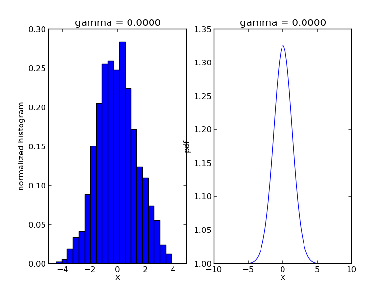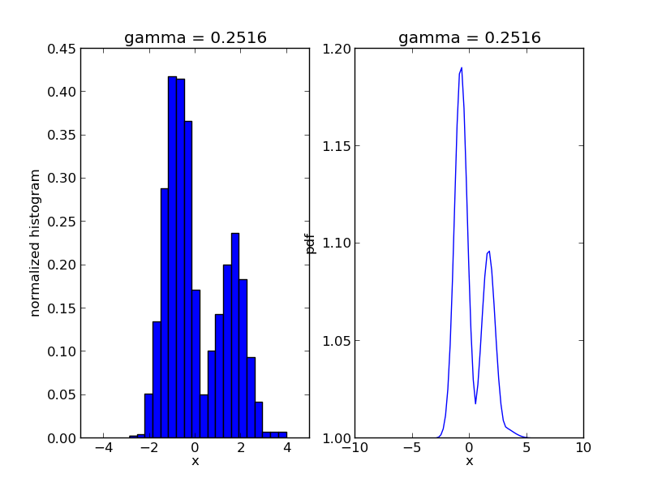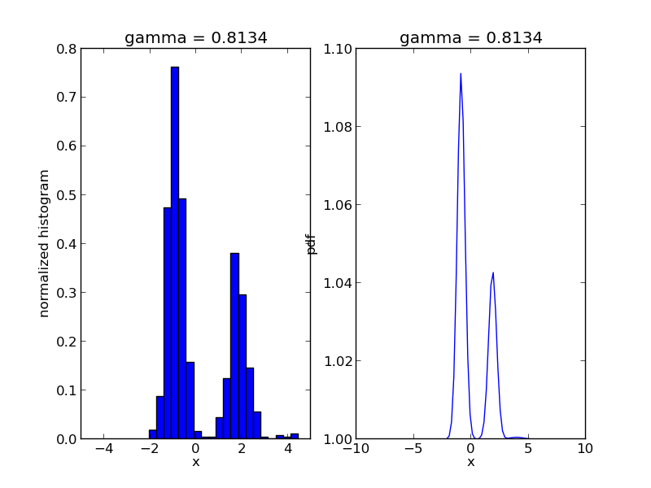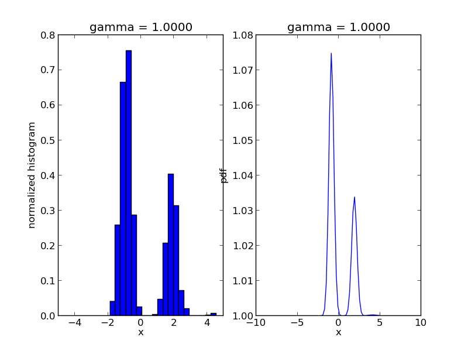